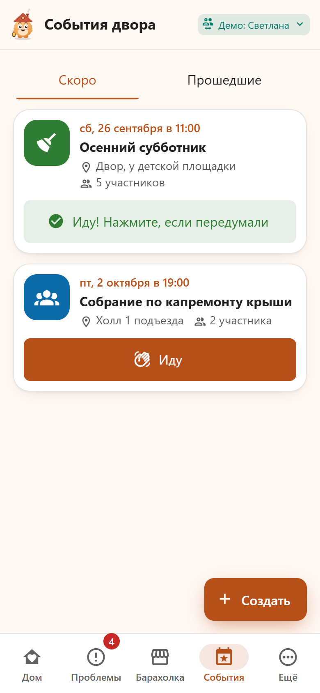
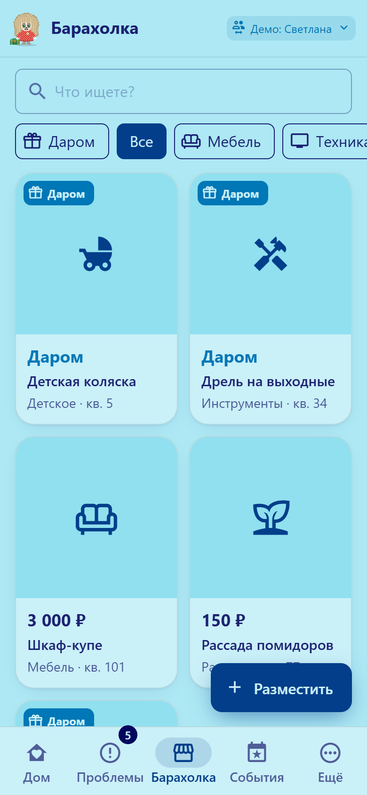
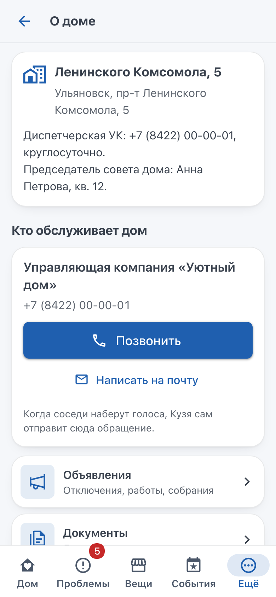
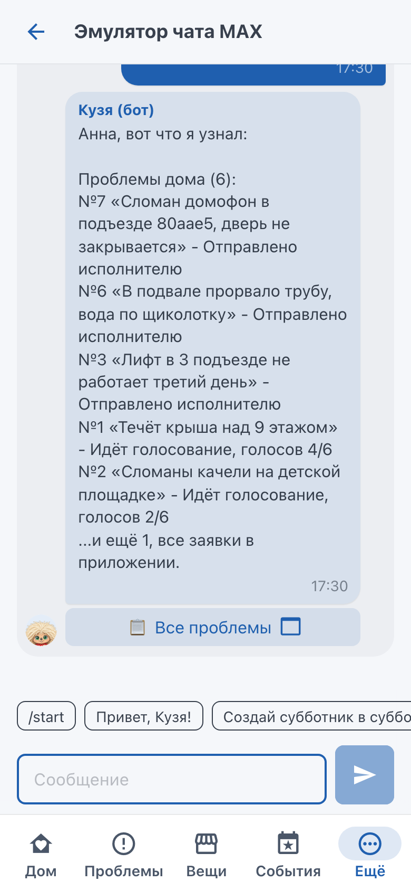
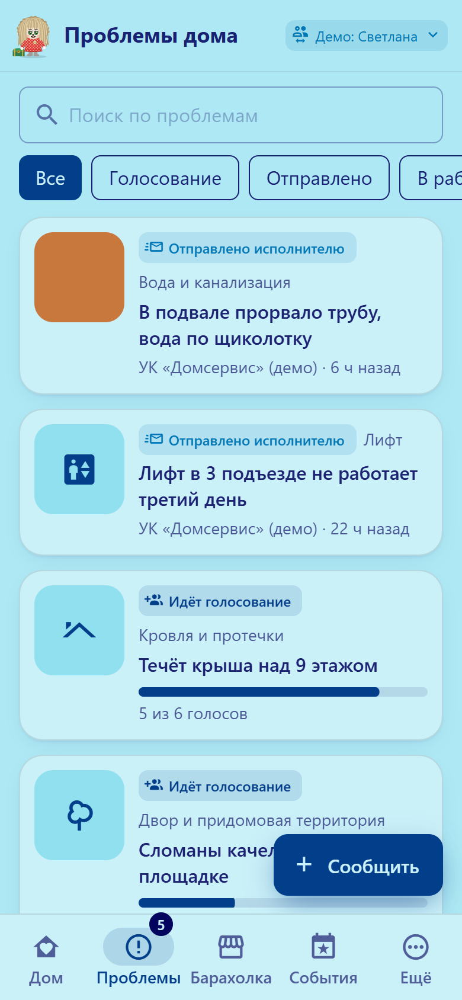
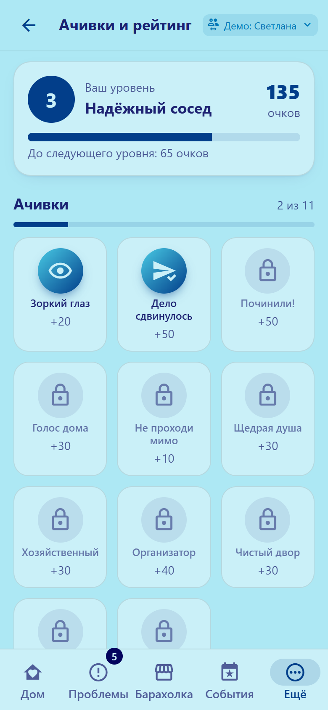

https://linkog.ru, открывается кнопкой в чате бота и диплинком https://max.ru/id732818139220_bot?startapp=home
Репозиторий и commit hash
https://github.com/Mojarung/max_hack, ветка main; hash сдаваемой версии: последний коммит main на момент дедлайна (git rev-parse HEAD)
Собственный API
для проверки не нужен; внутренний REST описан в docs/openapi.json
Тестовые учётные записи
в MAX: ваш аккаунт. Личка с ботом: /start → «Открыть приложение». Сценарий в группе: добавьте бота в чат администратором с правом «Читать сообщения». Без MAX: демо-жители 1001-1008 в переключателе мини-приложения, 1001 администратор
Переменные окружения
для проверки ничего вписывать не нужно: .env.example работает без изменений, локальный запуск идёт в мок-режиме с эмулятором чата. MAX_BOT_TOKEN нужен только для своего экземпляра бота в MAX: с токеном рабочего бота две копии делили бы между собой обновления
Запуск
docker compose up -d --build (сборка около 2,5 минут) → http://localhost:8180 (мини-приложение), http://localhost:8180/dev/chat (эмулятор чата), http://localhost:8025 (тестовая почта с обращениями)
Основной сценарий
«Проблемы» → «Сообщить» → фото и описание → голоса соседей → при пороге Кузя отправляет обращение → статус и срок в карточке
Трек «Умный город», пилот в Ульяновске
Домовой Кузя
Бот для домового чата в MAX. Соседи жалуются на поломку, а Кузя превращает это в одно обращение к тому, кто обязан починить, и следит за сроком.
Симаков Максим
ML и DevOps
Вериялов Кирилл
Backend
Храмов Альберт
Backend
9:41
Коротко
Для кого
Жители домов на 40-150 квартир, у которых есть домовой чат. Первым Кузей пользуется председатель совета дома, остальные соседи поддерживают заявку одной кнопкой.
Проблема
В чате пишут «у нас течёт», но заявка до УК не доходит: никто не знает, кто отвечает и какой срок положен, и каждый думает, что заявку уже подал сосед.
Решение
Житель присылает фото. Кузя определяет исполнителя и срок по закону, соседи голосуют в чате, на пороге обращение уходит исполнителю. Просрочат - Кузя готовит жалобу в Госжилинспекцию.
Почему MAX
С 01.09.2026 УК обязаны работать с жителями через MAX (ПП РФ № 40). Кузя живёт в чате, где соседи уже общаются.
Что получает УК
Одно оформленное обращение с фото и нормативом вместо десятков звонков и повторных заявок.
Готовность
Работающий MVP в настоящем MAX: бот, мини-приложение, модерация, события, барахолка, укрытия. Запуск одной командой.
Соседи обсуждают поломку в чате, но заявку никто не подаёт
Председатель совета дома хочет, чтобы УК устранила протечку кровли в срок. Но жалобы разбросаны по чату, непонятно, кто отвечает и какой срок положен, и проблема висит неделями.
Факт
Источник
С 01.09.2026 УК принимают обращения жителей через MAX
ПП РФ № 40 от 26.01.2026
Протечку кровли и неисправный лифт устраняют за 1 сутки
Госстрой, пост. № 170
За проблему в доме отвечают разные организации: УК, регоператор ТКО, администрация, аварийные службы
ЖК РФ, ПП № 491, 131-ФЗ
Жалоб на ЖКХ больше: в Татарстане за 8 месяцев 2026 года 21,9 тыс. жалоб в ГЖИ, на 38,7% больше
Бизнес Online, 11.09.2026
Проверяем в пилоте
Жители не знают, кто отвечает и какой срок положен.
Каждый думает, что заявку уже подал кто-то другой.
Коллективное обращение с фото и нормативом закрывают быстрее, чем разрозненные звонки.
Как: опрос 30+ жителей и сравнение числа жалоб в чате с заявками в УК за 4 недели до запуска.
Заявки онлайн уже подают, но почти всегда поодиночке
8,5%
заявок в УК через «Госуслуги.Дом» коллективные
1 клетка ≈ 7 500 заявок. Январь-апрель 2025: 1,5 млн заявок, приложение установили 10+ млн человек. Коллективная заявка в нём есть с сентября 2024 года.
Минстрой и Минцифры России (CNews, 13.05.2025)
Что есть сейчас
Чего не хватает
«Госуслуги.Дом»
Отдельное приложение со входом через Госуслуги. Соседи договариваются в чате, а заявку приходится заново оформлять в приложении. Поддержать её может только собственник, адресат только УК.
«Решаем вместе»
Сообщение от одного человека, не видно, что соседи уже пожаловались. Срок 30 дней на ответ, а не норматив на ремонт.
Домовой чат без бота
Все соседи уже здесь, но разговор не становится заявкой: нет адресата, срока и контроля.
Кузя собирает соседей прямо в чате, а обращение отправляет туда, где его уже принимает УК: на почту диспетчерской, после пилота и в ГИС ЖКХ. Голос может отдать и арендатор, течь он видит так же.
Как сейчас и как с Кузей
Шаг
Сейчас
С Кузей
Заметили
«у нас течёт» и 20 ответов «у нас тоже»
фото и описание, Кузя сам находит такую же заявку
Кому писать
ищут в интернете, путают УК и регоператора
исполнитель виден сразу, из справочника
Заявление
пишет один активист, остальные в стороне
соседи жмут «Поддерживаю», текст Кузя собирает сам
Срок
никто не знает
в обращении, со ссылкой на норматив
Контроль
никто не помнит, когда подавали
таймер в карточке, при просрочке жалоба в ГЖИ
Итог
проблема висит неделями
статус «Решено», соседи видят результат
Жителям больше не нужно
искать ответственного, писать заявление вручную, звонить в УК с вопросом «а подавали ли уже»
Кузя делает сам
находит адресата, собирает текст обращения, следит за сроком, готовит жалобу при просрочке
Основной сценарий: от фото до решения
В чате дома житель жмёт «Сообщить о проблеме» под сообщением Кузи.
Присылает фото и пишет «течёт крыша над 9 этажом». Кузя сразу показывает: кровля, отвечает УК, срок 24 часа, и проверяет, нет ли такой же заявки.
В чате появляется карточка с кнопкой «Поддерживаю (1/6)». Порог 6 голосов: это 15% от 40 участников чата.
Соседи голосуют в чате или в приложении, счётчик обновляется у всех сразу.
На пороге Кузя отправляет обращение исполнителю и пишет в чат срок.
В карточке идёт таймер. Просрочили - готова жалоба в Госжилинспекцию.
Починили - соседи получают очки, Кузя радуется.
9:41
Шаг 2: категория и похожие заявки
9:41
Шаги 3-6: голоса и срок
Кто обязан починить и за какой срок
Срок и основание Кузя берёт из справочника со ссылками на ПП РФ № 290, 354, 410, 491, 1156 и постановление Госстроя № 170. Нейросеть только выбирает категорию. Перед пилотом справочник проверяет юрист УК. Для дорог 30 дней: срок ответа на обращение по 59-ФЗ.
Чем Кузя отличается
9:41
По Кузе видно, как дела у дома
Настроение маскота считается по заявкам: просрочки его огорчают, решённые проблемы и субботники радуют. Председателю не нужен отчёт, чтобы понять состояние дома.
Закон не выдумывается
Нейросеть только выбирает категорию. Кому писать, на каком основании и в какой срок, Кузя берёт из справочника.
Доводит заявку до ремонта
Порог голосов считается от размера чата, похожие заявки объединяются, обращение уходит само, за сроком следит таймер, просрочка уходит в ГЖИ. Запах газа сразу направляется в аварийную службу, без голосования.
Зачем жителю открывать Кузю, пока ничего не сломалось
9:41

9:41

События двора
«Кузя, создай субботник в субботу в 11». Анонс в чате, кнопка «Иду», чат события, напоминание записавшимся.
Барахолка
Отдать коляску или продать шкаф соседу. Кузя передаёт сообщение продавцу в личку.
Очки и уровни
За заявки, голоса, субботники и подарки соседям. Рейтинг соседей и уровень дома.
Безопасность
Карта укрытий с маршрутом, оповещение о БПЛА на весь экран. Без мобильного интернета Кузя отвечает про укрытия прямо в чате.
Модерация
Мат, оскорбления, реклама и спам удаляются. После трёх предупреждений Кузя пишет администраторам.
Разговор с Кузей
Знает, кто пишет, помнит разговор, отвечает про дом: УК, тарифы, капремонт.
Когда что-то сломается, соседи уже в Кузе и голосуют за заявку.
Дом, соседи и права берутся из чата MAX
Дом появляется сам
Добавили Кузю в домовой чат, и у каждого участника дом уже есть в приложении. Несколько домов - переключатель в шапке. Вышел из чата - доступ пропал.
Права из чата
Администратор чата в MAX становится администратором дома: задаёт адрес, УК и порог голосов, закрепляет объявления. Жителю ничего настраивать не нужно.
Объявления и документы
«@Кузя, сделай объявление о субботнике в субботу в 11»: объявление закреплено в чате и висит на доске, соседи жмут «Иду». Протоколы и договор с УК видят все жители, личные документы только владелец.
9:41
Объявление по просьбе в чате
9:41

Карточка дома и УК
Что Кузя берёт от MAX сверх минимума
Бот в групповом чате
Кнопка «Поддерживаю (4/6)» под заявкой: сообщение переписывается после каждого голоса из чата или приложения
Участники и администраторы чата становятся жителями и администраторами дома, порог голосов считается от размера чата
Закреп объявлений, удаление спама, фото заявки прямо в чате
Мини-приложение
Вход по подписи MAX (initData, проверяется на сервере): без регистрации и паролей
Диплинки ?startapp=: из сообщения бота сразу в нужную заявку или событие
Системная кнопка «Назад» и виброотклик
«Позвать соседей» через шеринг MAX
9:41

Кузя отвечает в чате дома
Всё работает от начала до конца в настоящем MAX. Подробности в README, раздел «Внешние сервисы и интеграции».
Как это выглядит
9:41

Заявки дома со сроками
9:41

Очки и рейтинг соседей
9:41
Укрытия и маршрут
9:41
Оповещение о БПЛА
Бизнес-модель: платят УК и регион, жителям бесплатно
Клиент
За что платит
Что получает
Управляющая компания
подписка на кабинет диспетчера
Одно обращение с фото и основанием вместо десятков звонков. Меньше повторных заявок и предписаний надзора за просрочки. Статусы меняет прямо в MAX.
Регион или муниципалитет
подключение Кузи к домовым чатам региона
Инструмент, который Ульяновская область сама просит: чаты становятся каналом работы с УК. Надзор получает оформленные жалобы с доказательствами.
Для жителей Кузя бесплатный
Польза растёт с числом соседей в чате: чем больше людей голосует, тем быстрее обращение уходит в УК. Платный вход срезал бы охват, а без охвата нечего продавать УК.
2 ГБ
памяти на одном сервере хватает на все процессы пилота. Нейросеть не обязательна: основной сценарий работает на правилах. Фото пересжимаются до 1600 px, хранилище не разрастается.
Модель оплаты - гипотеза. В пилоте считаем, сколько домов выдерживает один сервер и сколько минут диспетчера экономит одно коллективное обращение.
Что изменится и как это измерим
Гипотеза: если жалобы из чата превращаются в коллективные обращения с правильным адресатом и сроком, в срок устраняют больше проблем. УК получает одно оформленное обращение с фото и основанием, а жители видят срок и могут пожаловаться в надзор.
Метрика
Как считаем
Цель пилота
Время до обращения в УК
от сообщения о проблеме до отправки обращения
медиана меньше 24 ч
Устранено в нормативный срок
доля заявок, закрытых до дедлайна
+30% к базовой линии
Объединённые дубли
житель поддержал существующую заявку вместо новой
больше 50% похожих жалоб
Вовлечённость
доля участников чата, проголосовавших за месяц
больше 25%
Ручная работа инициатора
звонки и письма в УК на одну проблему
с 5-10 до 0-1
Цели - гипотезы. Базовая линия: 4 недели истории чата до подключения Кузи.
Архитектура
Модульный монолит: один пакет и четыре процесса из одного образа, связь через RabbitMQ. REST и SSE вместо gRPC и GraphQL: мини-приложение живёт в WebView, так быстрее и проще отлаживать.
Данные и интеграции: что уже настоящее
Интеграция
Сейчас в MVP
Нужно для внедрения
MAX Bot API и MAX Bridge
настоящая подпись initData проверяется на сервере
токен бота, HTTPS-адрес мини-приложения
Справочник исполнителей и сроков
настоящие нормы справочно
проверка юристом УК, региональные нормы
Участники и администраторы чата
настоящая через Bot API, бот администратор чата
добавить Кузю в домовой чат
Отправка обращения в УК
модельная письмо на тестовый адрес с пометкой «[ТЕСТ]»
e-mail диспетчерской УК (задаётся в настройках дома) или ГИС ЖКХ
Паспорт дома, тарифы, капремонт
модельные данные в MCP
ГИС ЖКХ, региональный фонд капремонта
Укрытия
демо-точки
реестр МЧС или муниципалитета
Оповещение о БПЛА
запускает администратор
региональная система оповещения
Нейросеть
Ollama Cloud или правила без сети
выбор модели, при необходимости своя Ollama
Персональных данных минимум: имя из MAX и номер квартиры по желанию. Фото без EXIF. Переписку чата Кузя не хранит, только срабатывания модерации.
Почему пилот в Ульяновске
128 тыс.ульяновцев уже в домовых чатах MAX
5 тыс.домовых чатов, куда можно добавить Кузю
135каналов УК и ресурсоснабжающих организаций в MAX
Тревога каждую неделю
«Беспилотную опасность» объявляют несколько раз в неделю. 25.09.2026 при атаке БПЛА пострадали до 15 человек, в школах отменили занятия.
Интернет отключают, MAX работает
Мобильный интернет в части районов ограничен до конца СВО. MAX в белом списке, поэтому заявка, голос и укрытия работают прямо в чате.
Регион ставит ту же задачу
Губернатор поставил задачу сделать чаты «полноценным инструментом взаимодействия жителей с управляющими организациями».
Город зовёт в чаты
Администрация Ульяновска просит УК перенести домовые чаты в MAX и повесить QR-коды в подъездах.
Источники: Улправда 18.08.2026; Lenta.ru и ВЗГЛЯД 25.09.2026; АиФ Ульяновск; Forbes, РБК 11.11.2025; 1ul.ru 29.08.2025. Ограничение: мини-приложение на своём домене не в белом списке и без мобильного интернета открывается через Wi-Fi. Для пилота просим включить домен в региональный список.
Пилот: один дом в Ульяновске, 4 недели
Где и с кем
Панельная девятиэтажка в Новом Городе (Заволжский район). УК, готовая принимать обращения по e-mail или в MAX. Председатель совета дома помогает запустить.
Как встраивается
Кузю добавляют в существующий домовой чат. УК указывает, куда слать обращения, юрист подтверждает сроки. Партнёры: управление ЖКХ города и Агентство госстройжилнадзора области.
Как зовём жителей
Закреплённое сообщение Кузи в чате, QR-код в подъезде, который открывает мини-приложение, первый субботник через Кузю.
После успеха
Все дома этой УК и кабинет диспетчера: приём обращений и смена статусов прямо в MAX.
Масштабирование: код тот же, меняется справочник
Не меняется
сценарий «фото → голоса → обращение → контроль»
бот, мини-приложение, агент, модель данных
голосование и жалоба при просрочке
модерация, события, очки
Настраивается под регион
справочник исполнителей и сроков
канал, через который УК принимает обращения
тарифы и капремонт (новый источник данных)
реестр укрытий и система оповещения
Та же задача есть у ТСЖ и ЖСК, в коттеджных посёлках и студенческих общежитиях.
Риски и ограничения MVP
Риск
Что делаем
УК игнорирует обращения из бота
в обращении основание и срок, при просрочке жалоба в ГЖИ, с УК договариваемся до пилота
Нейросеть ошиблась с категорией
правовая часть из справочника, газ определяется правилами, житель видит категорию до отправки
Накрутка голосов
один голос на жителя, порог от размера чата, блокировка строки при подсчёте
Спам и токсичность в чате
двухслойная модерация, журнал срабатываний, уведомление администраторов
Нейросеть недоступна
основной сценарий работает на правилах без неё
Отключили мобильный интернет
MAX в белом списке: заявка, голос и укрытия текстом в чате; мини-приложение через Wi-Fi, домен просим в региональный белый список
Голос в чате путают с решением собрания
называем это поддержкой обращения; решения собственников идут в ОСС через «Госуслуги.Дом»
Ограничения MVP: отправка обращения и данные ГИС ЖКХ модельные, укрытия демонстрационные, long polling вместо webhook. Подробно в README.
Источники
ТЗ трека «Умный город», 2026
Росстат: жилищный фонд РФ, 2024
ПП РФ от 26.01.2026 № 40 (взаимодействие через MAX)
Жилищный кодекс РФ
ПП РФ от 13.08.2006 № 491 (содержание общего имущества)
ПП РФ от 03.04.2013 № 290 (минимальный перечень работ)
ПП РФ от 06.05.2011 № 354 (коммунальные услуги)
ПП РФ от 15.05.2013 № 416 (управление МКД)
Постановление Госстроя от 27.09.2003 № 170
ПП РФ от 14.05.2013 № 410 (газовое оборудование)
ПП РФ от 12.11.2016 № 1156 (обращение с ТКО)
Федеральный закон № 59-ФЗ (обращения граждан)
Федеральный закон № 131-ФЗ (местное самоуправление)
CNews, 13.05.2025: 1,5 млн заявок через «Госуслуги.Дом», 8,5% коллективных
Минстрой России, 17.09.2024: коллективная заявка в «Госуслуги.Дом»
Бизнес Online, 11.09.2026: жалобы в ГЖИ Татарстана